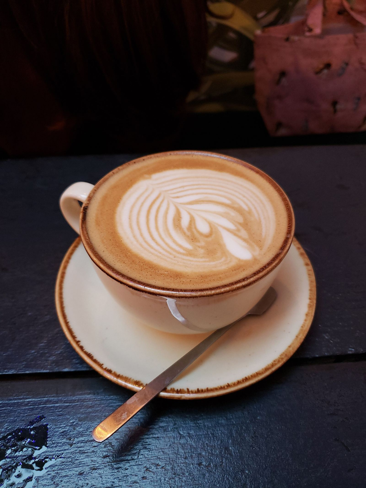

Voice
ご来店のイメージ
実際のお客様の声ではなく、イメージとして作成した例です。カフェでの過ごし方の参考としてご覧ください。

イメージ例
「散歩の途中で立ち寄りました。急かされない空気の中で、本を読みながらゆっくり過ごせそうなお店だと感じました。ひとりの時間を大切にしたい日に、また寄りたいです。」
イメージ例
「友人と話し込みたくて訪れました。コーヒーと甘いものを間に置いておしゃべりしていると、時間があっという間に過ぎていきました。ほっとできる、気取らない場所だと思います。」
イメージ例
「城下町を歩いたあとの休憩に立ち寄りました。歩き疲れた足を休めながら、この日の街並みをふり返る時間が、旅のいい思い出になりました。」
上記はすべて、業種から想定して作成したイメージ例です。実際のお客様の声ではありません。
実際のお店の雰囲気は、ぜひご来店のうえお確かめください。